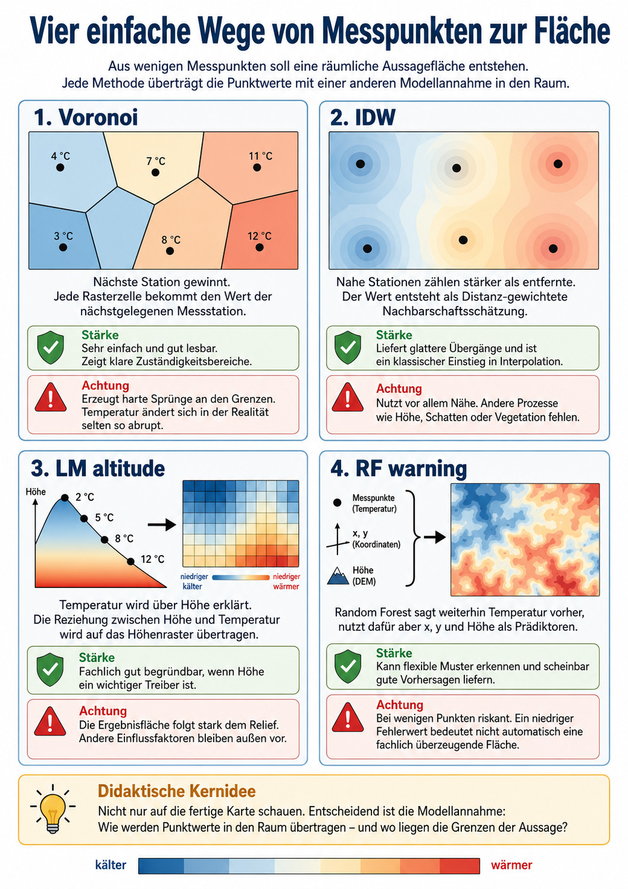

Worum es geht
Dieser Reader begleitet einen Hands-on-Einstieg in räumliches Arbeiten mit R und RStudio. Im Mittelpunkt steht ein basales Skript: Es wird geöffnet, blockweise ausgeführt und so gelesen, dass nachvollziehbar wird, welche Daten eingelesen werden, welche räumlichen Operationen stattfinden und welche Ergebnisdatensätze daraus entstehen. Die SuS sollen hier nicht selbst einen vollständigen Forschungsworkflow entwickeln, sondern trainieren, ein vorhandenes Skript kontrolliert zu nutzen, seine Zwischenschritte zu verstehen und die Ergebnisse fachlich zu lesen.
Fachlich geht es um ein typisches Problem der Geoinformatik und physischen Geographie: Messungen liegen punktuell vor, die Fragestellung richtet sich aber auf eine Fläche. Das ist die normale Ausgangslage vieler Messkampagnen. Man hat Stationen, Logger oder einzelne Messpunkte, aber die eigentliche Frage lautet nicht nur: Was wurde genau an diesen Punkten gemessen? Sie lautet: Wie können wir aus diesen Punkten eine begrenzte, nachvollziehbare räumliche Aussage ableiten?
Die Übung ist deshalb zugleich technisch und inhaltlich angelegt. Technisch geht es darum, mit RStudio ein Skript auszuführen, einfache räumliche Datenobjekte zu verarbeiten, Ergebnisraster zu erzeugen und diese am Ende auch interaktiv in einer Leaflet-Karte zu betrachten. Inhaltlich geht es darum zu verstehen, dass jede flächenhafte Darstellung aus Punktdaten eine Annahme darüber enthält, wie Werte zwischen Messpunkten in den Raum übertragen werden.
Die zentrale Frage lautet:
Wir haben wie üblich nur einzelne Messpunkte. Wie gehen wir vor, wenn wir daraus trotzdem eine räumliche Aussage zur Temperaturverteilung ableiten wollen?
Die Übung fragt also methodisch: Was tun wir, wenn die Beobachtung punktuell ist, die Frage aber flächenhaft gestellt wird?
Projekt herunterladen und öffnen
Für die Übung wird das komplette RStudio-Projekt als ZIP-Datei bereitgestellt:
Die ZIP-Datei muss zuerst heruntergeladen und entpackt werden. Danach wird im entpackten Projektordner die .Rproj-Datei geöffnet. Erst dann liegen Skript, Datenordner und relative Pfade in der erwarteten Projektstruktur.
Das Skript
Das vollständige R-Skript kann hier heruntergeladen werden:
microclimate_warmup_minimal.R herunterladen
# 1. Daten laden ----------------------------------------------------------
# Messpunkte und Höhenraster werden aus dem Projektordner geladen.
library(sf)
library(terra)
library(gstat)
library(randomForest)
library(leaflet)
m <- readRDS("data/climdata.rds")
dem <- rast("data/DEM1.tif")
names(dem) <- "altitude"
# 2. Einen Zeitpunkt auswählen -------------------------------------------
# Aus den Messdaten wird eine Temperaturspalte als Zielvariable gesetzt.
m$temp <- m[["A20230830"]]
# 3. Koordinatensystem angleichen ----------------------------------------
# Messpunkte werden in das Koordinatensystem des DEM transformiert.
m <- st_transform(m, crs(dem))
# 4. Höhe an den Stationen extrahieren -----------------------------------
# Für jede Station wird die Höhe aus genau diesem DEM übernommen.
m$altitude <- terra::extract(dem, terra::vect(m))$altitude
# 5. Gültige Messpunkte auswählen ----------------------------------------
# Es bleiben nur Punkte mit Temperaturwert und Höhenwert.
pts <- m[!is.na(m$temp) & !is.na(m$altitude), c("temp", "altitude")]
# 6. Aussagefläche erzeugen ----------------------------------------------
# Der Ausgaberaum wird auf Convex Hull der Stationen plus 20 m begrenzt.
area <- st_sf(geometry = st_buffer(st_convex_hull(st_union(st_geometry(pts))), 20))
dem <- crop(dem, vect(area))
dem <- mask(dem, vect(area))
names(dem) <- "altitude"
# 7. Vorhersagegrid erzeugen ---------------------------------------------
# Das DEM wird in eine Tabelle mit Rasterzellen, Koordinaten und Höhe übersetzt.
grid <- as.data.frame(dem, xy = TRUE, cells = TRUE, na.rm = FALSE)
names(grid)[4] <- "altitude"
grid <- grid[!is.na(grid$altitude), ]
grid_sf <- st_as_sf(grid, coords = c("x", "y"), crs = st_crs(pts), remove = FALSE)
# 8. Ergebnisraster berechnen --------------------------------------------
# Vier Modellannahmen erzeugen vier räumliche Ergebnisraster.
make_map <- function(pred, name) {
r <- dem
values(r) <- NA
values(r)[grid$cell] <- pred
names(r) <- name
r
}
rmse_fun <- function(e) {
sqrt(mean(e * e, na.rm = TRUE))
}
xy <- st_coordinates(pts)
pts$x <- xy[, 1]
pts$y <- xy[, 2]
fit_lm <- lm(temp ~ altitude, data = st_drop_geometry(pts))
map_lm <- predict(dem, fit_lm)
names(map_lm) <- "LM_altitude"
vor_df <- gstat::idw(
temp ~ 1,
locations = pts,
newdata = grid_sf,
nmax = 1
)
map_vor <- make_map(vor_df$var1.pred, "Voronoi")
idw_df <- gstat::idw(
temp ~ 1,
locations = pts,
newdata = grid_sf,
nmax = 4
)
map_idw <- make_map(idw_df$var1.pred, "IDW")
fit_rf <- randomForest(
temp ~ x + y + altitude,
data = st_drop_geometry(pts),
ntree = 200
)
rf_pred <- predict(fit_rf, newdata = grid)
map_rf <- make_map(rf_pred, "RF_warning")
# 9. Modelle validieren ---------------------------------------------------
# Jede Station wird einmal ausgelassen und aus den übrigen zurückgeschätzt.
lm_cv <- rep(NA, nrow(pts))
rf_cv <- rep(NA, nrow(pts))
for (i in 1:nrow(pts)) {
train <- pts[-i, ]
test <- pts[i, ]
fit_lm_i <- lm(temp ~ altitude, data = st_drop_geometry(train))
lm_cv[i] <- predict(fit_lm_i, newdata = st_drop_geometry(test))
fit_rf_i <- randomForest(
temp ~ x + y + altitude,
data = st_drop_geometry(train),
ntree = 200
)
rf_cv[i] <- predict(fit_rf_i, newdata = st_drop_geometry(test))
}
vor_model <- gstat::gstat(
formula = temp ~ 1,
locations = pts,
nmax = 1,
set = list(idp = 2)
)
vor_cv <- gstat::gstat.cv(vor_model, nfold = nrow(pts))
idw_model <- gstat::gstat(
formula = temp ~ 1,
locations = pts,
nmax = 4,
set = list(idp = 2)
)
idw_cv <- gstat::gstat.cv(idw_model, nfold = nrow(pts))
rmse <- data.frame(
model = c("LM altitude", "Voronoi", "IDW", "RF warning"),
RMSE = c(
rmse_fun(pts$temp - lm_cv),
rmse_fun(vor_cv$residual),
rmse_fun(idw_cv$residual),
rmse_fun(pts$temp - rf_cv)
)
)
# 10. Ergebnisraster darstellen ------------------------------------------
# Alle Ergebnisraster werden mit gleicher Farbskala und Messpunkten dargestellt.
maps <- c(map_vor, map_idw, map_lm, map_rf)
z <- range(c(pts$temp - 1, pts$temp + 1), na.rm = TRUE)
par(mfrow = c(2, 2))
for (i in 1:nlyr(maps)) {
plot(maps[[i]], range = z, main = names(maps)[i])
points(pts, pch = 19, cex = 0.8)
}
par(mfrow = c(1, 1))
print(rmse)
# 11. Ergebnisse als Leaflet-Karte darstellen ----------------------------
# Die gleichen Ergebnisraster werden zusätzlich interaktiv angezeigt.
pal <- leaflet::colorNumeric(
palette = hcl.colors(100, "RdYlBu", rev = TRUE),
domain = z,
na.color = "transparent"
)
pts_leaflet <- st_transform(pts, 4326)
pts_xy <- st_coordinates(pts_leaflet)
leaflet_map <- leaflet::leaflet()
leaflet_map <- leaflet::addProviderTiles(
leaflet_map,
leaflet::providers$CartoDB.Positron
)
for (i in 1:nlyr(maps)) {
leaflet_map <- leaflet::addRasterImage(
leaflet_map,
x = raster::raster(maps[[i]]),
colors = pal,
opacity = 0.70,
group = names(maps)[i]
)
}
leaflet_map <- leaflet::addCircleMarkers(
leaflet_map,
lng = pts_xy[, 1],
lat = pts_xy[, 2],
radius = 4,
stroke = FALSE,
fillOpacity = 0.9,
label = paste0("Temperatur: ", round(pts$temp, 2), " °C"),
group = "Messpunkte"
)
leaflet_map <- leaflet::addLayersControl(
leaflet_map,
baseGroups = names(maps),
overlayGroups = "Messpunkte",
options = leaflet::layersControlOptions(collapsed = FALSE)
)
leaflet_map <- leaflet::addLegend(
leaflet_map,
pal = pal,
values = z,
title = "Temperatur",
opacity = 0.70
)
leaflet_map <- leaflet::hideGroup(leaflet_map, names(maps)[-1])
leaflet_mapFachliche Idee: Mikroklima
Mikroklima beschreibt kleinräumige Unterschiede in Temperatur, Feuchte, Wind, Strahlung oder thermischer Belastung. Solche Unterschiede entstehen nicht zufällig. Sie hängen unter anderem mit Geländeform, Höhe, Hanglage, Vegetation, Verschattung, Bodenbedeckung, Bebauung, Kaltluftbildung und Luftaustausch zusammen.
Für diese Übung ist Mikroklima der fachliche Anlass für die methodische Frage: Wie arbeitet man weiter, wenn nur punktuelle Messungen vorliegen, die gewünschte Aussage aber räumlich ist?
Zwischen Höhe, Luftdruck und Temperatur besteht ein grundlegender physikalischer Zusammenhang: Mit zunehmender Höhe nimmt der Luftdruck ab, Luft dehnt sich bei Aufstieg aus und kühlt dabei in der Regel ab. Deshalb ist Höhe häufig ein sinnvoller erster Prädiktor für räumliche Temperaturunterschiede.
Verwendet werden daher neben den Temperaturmessungen an einzelnen Stationen ein digitales Höhenmodell. Die Übung nutzt Höhe als einfache, fachlich begründbare Hilfsvariable ein, um zu zeigen, wie Punktmessungen mit einem flächenhaften Raster verbunden und in eine räumliche Ergebnisfläche übersetzt werden können.
- Temperaturmessungen an mehreren Stationen.
- Höhe aus einem digitalen Höhenmodell.
Das Ergebnis ist daher ein modellierter räumlicher Datensatz. Je nachdem, ob Nähe, Stationszuständigkeit, Höhe oder ein datengetriebenes Muster als wichtig angenommen wird, entsteht eine andere räumliche Struktur.
Methodische Idee: Raum füllen
Messstationen liefern punktuelle Werte. Eine räumliche Aussagefläche braucht aber Werte für viele Rasterzellen. Zwischen diesen beiden Ebenen liegt die zentrale methodische Aufgabe. Genau diese Aufgabe beantwortet das basale Skript Schritt für Schritt:
Punktwerte müssen in eine flächenhafte Aussage übersetzt werden.
Das Skript zeigt vier einfache Wege, diese Übersetzung vorzunehmen. Sie stehen nicht für „richtig“ oder „falsch“, sondern für unterschiedliche Annahmen über räumliche Übertragung.
Voronoi
Voronoi ordnet jede Rasterzelle der nächstgelegenen Messstation zu. Der Wert dieser Station wird direkt auf die Zelle übertragen.
Kurzlogik:
Nächste Station gewinnt.
Damit entsteht ein Ergebnisraster mit harten Grenzen. Jede Station erhält einen Zuständigkeitsbereich. Innerhalb dieses Bereichs ist der Wert überall gleich, an der Grenze zur nächsten Station springt er abrupt.
Voronoi ist methodisch einfach und gut lesbar. Es glättet nichts und erzeugt keine Zwischenwerte. Gleichzeitig ist die Annahme sehr grob: Temperatur ändert sich in der Realität selten sprunghaft an geometrischen Grenzen zwischen Stationen.
vor_df <- gstat::idw(
temp ~ 1,
locations = pts,
newdata = grid_sf,
nmax = 1
)
map_vor <- make_map(vor_df$var1.pred, "Voronoi")IDW
IDW bedeutet inverse distance weighting. Das Verfahren schätzt den Wert einer Rasterzelle aus nahegelegenen Stationen. Nahe Stationen erhalten ein höheres Gewicht, weiter entfernte Stationen ein geringeres Gewicht.
Kurzlogik:
Nähe wirkt, aber nicht hart. Nahe Messpunkte zählen stärker als entfernte.
Im Skript wird nmax = 4 verwendet. Jede Rasterzelle wird also nur aus den vier nächsten Stationen geschätzt. Dadurch bleibt die Schätzung lokal. Das Ergebnis wird glatter als Voronoi, aber weniger global geglättet als eine IDW-Variante, bei der alle Stationen in jede Schätzung eingehen.
IDW ist eine typische Einstiegsform der Interpolation. Es nutzt räumliche Nähe als zentrales Argument. Fachlich muss man aber prüfen, ob Nähe im konkreten Fall tatsächlich der wichtigste Zusammenhang ist. Bei Mikroklima kann das zutreffen, muss aber nicht ausreichen, weil Gelände, Schatten, Vegetation oder Kaltluft ebenfalls wirksam sein können.
idw_df <- gstat::idw(
temp ~ 1,
locations = pts,
newdata = grid_sf,
nmax = 4
)
map_idw <- make_map(idw_df$var1.pred, "IDW")LM altitude
Das lineare Höhenmodell nutzt nicht primär die räumliche Nähe zwischen Stationen, sondern den Zusammenhang zwischen Temperatur und Höhe.
Kurzlogik:
Temperatur wird über Höhe erklärt und auf das Höhenraster übertragen.
Das Modell schätzt eine lineare Beziehung zwischen Stationshöhe und Temperatur. Anschließend wird diese Beziehung auf jede Rasterzelle des DEM angewendet. Dadurch folgt das Ergebnis stark dem Höhenmuster.
Dieses Modell ist methodisch anders als Voronoi und IDW. Es füllt den Raum nicht über Stationsnachbarschaft, sondern über eine erklärende Variable. Wenn Höhe fachlich relevant ist, kann das sinnvoll sein. Wenn die gemessenen Temperaturunterschiede stärker durch Schatten, Vegetation oder lokale Kaltluft geprägt sind, kann ein reines Höhenmodell zu kurz greifen.
Ja, der Abschnitt verschiebt die Aufmerksamkeit zu stark auf x/y/altitude und sagt zu wenig klar: RF sagt weiterhin Temperatur vorher. Die Koordinaten und die Höhe sind nur die Eingangsvariablen, mit denen RF versucht, die gemessene Temperatur zu rekonstruieren.
Ersetze den Abschnitt durch diese Fassung:
fit_lm <- lm(temp ~ altitude, data = st_drop_geometry(pts))
map_lm <- predict(dem, fit_lm)
names(map_lm) <- "LM_altitude"RF warning
Random Forest ist ein flexibles, datengetriebenes Modell. Im Skript ist die Zielvariable weiterhin die gemessene Temperatur:
tempDas Modell versucht also, Temperaturwerte vorherzusagen. Dafür erhält es drei Prädiktoren:
x
y
altitudeDamit kann RF Temperaturunterschiede aus räumlicher Position und Höhe ableiten. Das Modell fragt nicht direkt nach einem physikalischen Prozess wie Kaltluft, Verschattung oder Vegetationswirkung. Es sucht in den vorhandenen Trainingsdaten nach Mustern: Welche Kombinationen aus Lage und Höhe treten zusammen mit höheren oder niedrigeren Temperaturen auf?
Kurzlogik:
RF lernt aus wenigen Stationen, welche Bereiche des Raums eher zu höheren oder niedrigeren Temperaturwerten passen.
Genau deshalb wird RF hier als Warnbeispiel geführt. Bei wenigen Messpunkten kann das Modell die vorhandenen Temperaturwerte scheinbar gut rekonstruieren, weil es die Punktlage und die Höhe flexibel aufteilt. Daraus entsteht ein Ergebnisraster, das plausibel aussehen und in der Validierung einen niedrigen Fehler haben kann.
Das bedeutet aber nicht automatisch, dass RF eine robuste mikroklimatische Erklärung gefunden hat. Das Modell kann Temperaturmuster erzeugen, die stark an die konkrete Lage der wenigen Messstationen gebunden sind. Eine gute Rückschätzung einzelner Stationen bedeutet deshalb nicht, dass die Ergebnisfläche als Prozessdarstellung fachlich überzeugend ist.
RF zeigt hier eine zentrale methodische Spannung:
Das Modell sagt Temperatur vorher, aber es erklärt nicht automatisch, warum diese Temperatur räumlich so verteilt sein sollte.
xy <- st_coordinates(pts)
pts$x <- xy[, 1]
pts$y <- xy[, 2]
fit_rf <- randomForest(
temp ~ x + y + altitude,
data = st_drop_geometry(pts),
ntree = 200
)
rf_pred <- predict(fit_rf, newdata = grid)
map_rf <- make_map(rf_pred, "RF_warning")
Gültige Fläche
Das Skript begrenzt die Ausgabe auf den unmittelbaren Messraum. Dazu wird aus den Stationen eine konvexe Hülle gebildet und um 20 m gepuffert:
Convex Hull der Stationen plus 20 m Puffer.
Diese Fläche ist keine perfekte Validitätsgrenze. Sie ist aber eine bewusste Einschränkung der Aussagefläche. Die Modelle werden nicht großflächig über das gesamte DEM ausgegeben, sondern nur im Umfeld der vorhandenen Messpunkte.
Das ist fachlich wichtig. Interpolation ist am stärksten dort vertretbar, wo Messpunkte den Raum tatsächlich stützen. Je weiter man sich vom Stationsnetz entfernt, desto stärker wird aus Interpolation eine spekulative Extrapolation.
Validierung
Die Modelle werden mit Leave-One-Out-Cross-Validation geprüft. Dabei wird jede Station einmal ausgelassen. Das Modell wird mit den übrigen Stationen berechnet und sagt anschließend den Wert der ausgelassenen Station voraus.
Der Ablauf ist:
- Eine Station wird ausgelassen.
- Das Modell wird mit den übrigen Stationen berechnet.
- Die ausgelassene Station wird vorhergesagt.
- Der Fehler zwischen Messwert und Vorhersage wird gespeichert.
- Der Vorgang wird für alle Stationen wiederholt.
Aus den Fehlern wird der RMSE berechnet.
\[ RMSE = \sqrt{ \frac{1}{n} \sum_{i=1}^{n} (\hat{y}_i - y_i)^2 } \]
Dabei ist y_i der gemessene Temperaturwert an Station i, ŷ_i der vorhergesagte Temperaturwert für die ausgelassene Station und n die Anzahl der Stationen.
Der RMSE gibt an, wie groß der typische Vorhersagefehler bei dieser Rückschätzung ist. Ein kleinerer RMSE bedeutet, dass die ausgelassenen Stationen im Durchschnitt besser getroffen wurden.
Für die Interpretation des flächenhaften Ergebnisses reicht das aber nicht. Der RMSE bewertet Punktvorhersagen an bekannten Stationsorten. Er sagt nicht automatisch, ob die gesamte Ergebnisfläche fachlich plausibel modelliert wurde. Besonders bei wenigen und räumlich eng liegenden Punkten muss das Ergebnis zusätzlich nach seiner Modelllogik gelesen werden.
Technische Minimalleistung des basalen Skripts
Das Skript ersetzt keinen vollständigen Forschungsworkflow. Es zeigt die kleinste sinnvolle Kette, mit der aus Messpunkten, einem Höhenraster und einfachen Modellannahmen räumliche Ergebnisdatensätze entstehen. Genau deshalb eignet es sich als Trainingsskript: Die SuS können den Arbeitsweg nachvollziehen, ohne dass Rohdatenimport, Paketmanagement, Fehlerbehandlung oder ein vollständiger Analyseviewer den Kern überdecken.
1. Daten laden
Benötigt werden zwei Dateien: data/climdata.rds und data/DEM1.tif. climdata.rds enthält die Messstationen mit Geometrie und Temperaturspalten. DEM1.tif enthält die Höhe als Raster.
library(sf)
library(terra)
library(gstat)
library(randomForest)
library(leaflet)
m <- readRDS("data/climdata.rds")
dem <- rast("data/DEM1.tif")
names(dem) <- "altitude"2. Einen Zeitpunkt auswählen
Die Messdaten enthalten mehrere Temperaturspalten. Für den Warmup wird ein Zeitpunkt herausgegriffen. Damit arbeiten alle Modelle mit derselben Zielvariable.
m$temp <- m[["A20230830"]]3. Koordinatensystem angleichen
Stationsdaten und DEM müssen im selben Koordinatensystem liegen. Das ist Voraussetzung für korrekte Höhenextraktion, Distanzen und Rasterüberlagerung.
m <- st_transform(m, crs(dem))4. Höhe an den Stationen extrahieren
Die Stationshöhen werden direkt aus dem verwendeten DEM gezogen. Dadurch nutzen Stationsmodell und Ergebnisraster dieselbe Höhenbasis.
m$altitude <- terra::extract(dem, terra::vect(m))$altitude5. Gültige Messpunkte auswählen
Es bleiben nur Stationen mit Temperaturwert und Höhenwert. Unvollständige Punkte werden aus der Modellierung entfernt.
pts <- m[!is.na(m$temp) & !is.na(m$altitude), c("temp", "altitude")]6. Aussagefläche erzeugen
Die Stationen definieren den Bereich, in dem die Ergebnisse ausgegeben werden. Das DEM wird auf Convex Hull plus 20 m zugeschnitten und maskiert.
area <- st_sf(
geometry = st_buffer(
st_convex_hull(st_union(st_geometry(pts))),
20
)
)
dem <- crop(dem, vect(area))
dem <- mask(dem, vect(area))
names(dem) <- "altitude"7. Vorhersagegrid erzeugen
Aus dem DEM wird eine Tabelle mit Rasterzellen, Koordinaten und Höhe gebaut. Diese Tabelle ist die technische Brücke zwischen Raster und Modell.
grid <- as.data.frame(dem, xy = TRUE, cells = TRUE, na.rm = FALSE)
names(grid)[4] <- "altitude"
grid <- grid[!is.na(grid$altitude), ]
grid_sf <- st_as_sf(
grid,
coords = c("x", "y"),
crs = st_crs(pts),
remove = FALSE
)8. Ergebnisraster berechnen
Das Skript erzeugt vier Ergebnisraster. Alle verwenden dieselbe Aussagefläche. Der Unterschied liegt in der Modellannahme.
make_map <- function(pred, name) {
r <- dem
values(r) <- NA
values(r)[grid$cell] <- pred
names(r) <- name
r
}
xy <- st_coordinates(pts)
pts$x <- xy[, 1]
pts$y <- xy[, 2]
fit_lm <- lm(temp ~ altitude, data = st_drop_geometry(pts))
map_lm <- predict(dem, fit_lm)
names(map_lm) <- "LM_altitude"
vor_df <- gstat::idw(temp ~ 1, locations = pts, newdata = grid_sf, nmax = 1)
map_vor <- make_map(vor_df$var1.pred, "Voronoi")
idw_df <- gstat::idw(temp ~ 1, locations = pts, newdata = grid_sf, nmax = 4)
map_idw <- make_map(idw_df$var1.pred, "IDW")
fit_rf <- randomForest(
temp ~ x + y + altitude,
data = st_drop_geometry(pts),
ntree = 200
)
rf_pred <- predict(fit_rf, newdata = grid)
map_rf <- make_map(rf_pred, "RF_warning")9. Modelle validieren
Die Modelle werden mit Leave-One-Out-Cross-Validation geprüft. Jede Station wird einmal ausgelassen und aus den übrigen Stationen zurückgeschätzt.
rmse_fun <- function(e) sqrt(mean(e * e, na.rm = TRUE))
lm_cv <- rep(NA, nrow(pts))
rf_cv <- rep(NA, nrow(pts))
for (i in 1:nrow(pts)) {
train <- pts[-i, ]
test <- pts[i, ]
fit_lm_i <- lm(temp ~ altitude, data = st_drop_geometry(train))
lm_cv[i] <- predict(fit_lm_i, newdata = st_drop_geometry(test))
fit_rf_i <- randomForest(
temp ~ x + y + altitude,
data = st_drop_geometry(train),
ntree = 200
)
rf_cv[i] <- predict(fit_rf_i, newdata = st_drop_geometry(test))
}
vor_model <- gstat::gstat(
formula = temp ~ 1,
locations = pts,
nmax = 1,
set = list(idp = 2)
)
vor_cv <- gstat::gstat.cv(vor_model, nfold = nrow(pts))
idw_model <- gstat::gstat(
formula = temp ~ 1,
locations = pts,
nmax = 4,
set = list(idp = 2)
)
idw_cv <- gstat::gstat.cv(idw_model, nfold = nrow(pts))
rmse <- data.frame(
model = c("LM altitude", "Voronoi", "IDW", "RF warning"),
RMSE = c(
rmse_fun(pts$temp - lm_cv),
rmse_fun(vor_cv$residual),
rmse_fun(idw_cv$residual),
rmse_fun(pts$temp - rf_cv)
)
)10. Ergebnisraster als statische Plots darstellen
Die vier Ergebnisraster werden zunächst nebeneinander als statische Plots dargestellt. Alle verwenden dieselbe Farbskala, damit die räumlichen Muster vergleichbar bleiben.
maps <- c(map_vor, map_idw, map_lm, map_rf)
z <- range(c(pts$temp - 1, pts$temp + 1), na.rm = TRUE)
par(mfrow = c(2, 2))
for (i in 1:nlyr(maps)) {
plot(maps[[i]], range = z, main = names(maps)[i])
points(pts, pch = 19, cex = 0.8)
}
par(mfrow = c(1, 1))
print(rmse)11. Ergebnisse als Leaflet-Karte darstellen
Am Ende werden die gleichen Ergebnisraster zusätzlich in eine interaktive Leaflet-Karte eingebunden. Die Karte ersetzt die statischen Plots nicht, sondern ergänzt sie: Die SuS können zwischen den Modellannahmen umschalten, die Messpunkte sichtbar lassen und dadurch prüfen, wie stark sich die räumliche Aussage je nach Verfahren verändert.
pal <- leaflet::colorNumeric(
palette = hcl.colors(100, "RdYlBu", rev = TRUE),
domain = z,
na.color = "transparent"
)
pts_leaflet <- st_transform(pts, 4326)
pts_xy <- st_coordinates(pts_leaflet)
leaflet_map <- leaflet::leaflet()
leaflet_map <- leaflet::addProviderTiles(
leaflet_map,
leaflet::providers$CartoDB.Positron
)
for (i in 1:nlyr(maps)) {
leaflet_map <- leaflet::addRasterImage(
leaflet_map,
x = raster::raster(maps[[i]]),
colors = pal,
opacity = 0.70,
group = names(maps)[i]
)
}
leaflet_map <- leaflet::addCircleMarkers(
leaflet_map,
lng = pts_xy[, 1],
lat = pts_xy[, 2],
radius = 4,
stroke = FALSE,
fillOpacity = 0.9,
label = paste0("Temperatur: ", round(pts$temp, 2), " °C"),
group = "Messpunkte"
)
leaflet_map <- leaflet::addLayersControl(
leaflet_map,
baseGroups = names(maps),
overlayGroups = "Messpunkte",
options = leaflet::layersControlOptions(collapsed = FALSE)
)
leaflet_map <- leaflet::addLegend(
leaflet_map,
pal = pal,
values = z,
title = "Temperatur",
opacity = 0.70
)
leaflet_map <- leaflet::hideGroup(leaflet_map, names(maps)[-1])
leaflet_mapWas nicht enthalten ist
Viele Bestandteile, die in einer umfangreichen Analyse zwingend oder sinnvoll wären, werden bewusst weggelassen:
Ecowitt-Rohdatenimport
automatische Paketinstallation
tryCatch-Sicherheitslogik
Backup-Dateien
R*-Tuning
Variogramm-Interpretation
KED
OK
GAM
TPS
große Benchmark-Tabellen
vollständiger Ergebnisviewer
PDF-Report
Batch-Verarbeitung aller ZeitpunkteDiese Elemente können später wichtig werden. Für diesen Warmup würden sie den Kern verdecken: Punktdaten, Raster, Aussagefläche, Interpolation, Modellannahme und erste Validierung.
Leitfragen zur Auswertung
Nach dem Ausführen des Skripts sollen die Ergebnisse nicht nur betrachtet, sondern methodisch gelesen werden.
Leitfragen:
- Welches Ergebnis zeigt harte Stationsbereiche?
- Welches Ergebnis zeigt lokale Nachbarschaft?
- Welches Ergebnis folgt vor allem der Höhe?
- Welches Ergebnis wirkt rechnerisch gut, ist aber fachlich riskant?
- Welche Rolle spielt die Begrenzung auf die Convex-Hull-Fläche?
- Was wird in der Leaflet-Karte leichter erkennbar als in den statischen Plots?
- Warum reicht ein niedriger RMSE nicht als alleinige Begründung?
Die wichtigste Schlussfolgerung lautet:
Eine räumliche Ergebnisfläche aus Messpunkten ist immer eine modellierte Aussage. Sie muss zur Datenlage, zur fachlichen Fragestellung, zur räumlichen Gültigkeitsfläche und zur gewählten Modellannahme passen. Das basale Skript zeigt dafür den kleinsten nachvollziehbaren Arbeitsweg: von Punkten über Raster und Modellannahme zur statischen und interaktiven Ergebnisdarstellung.